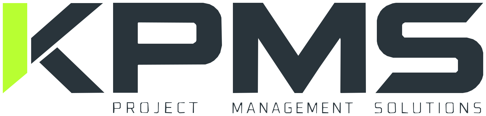
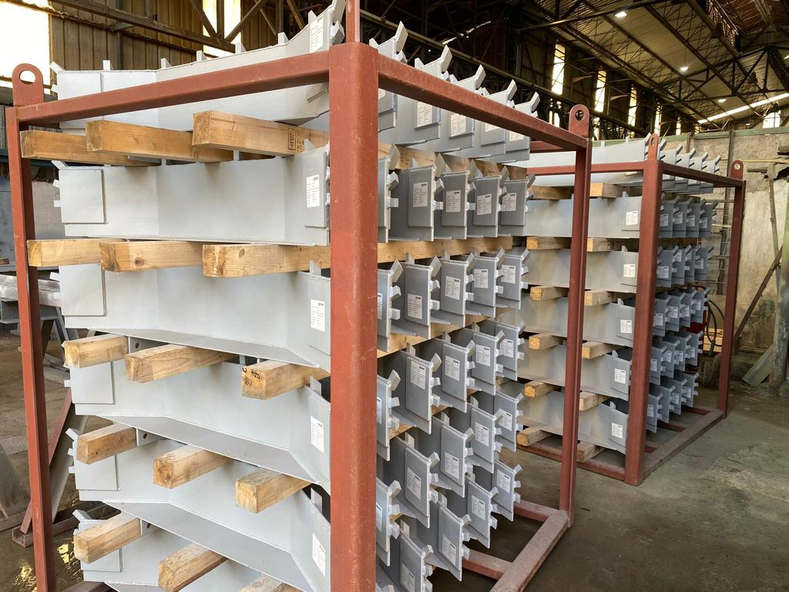
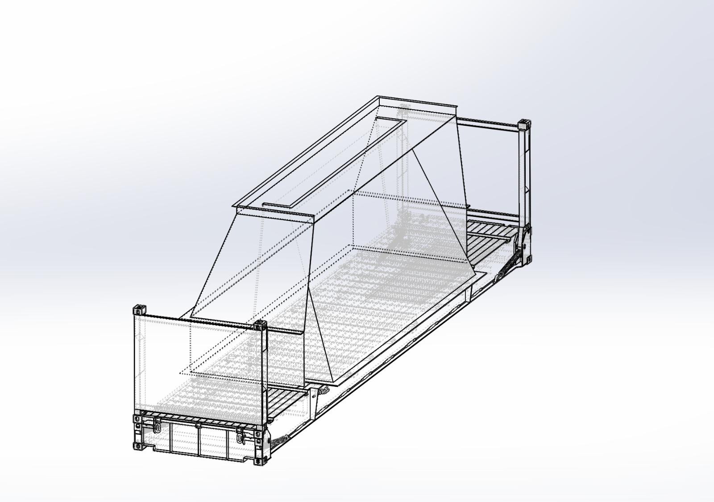
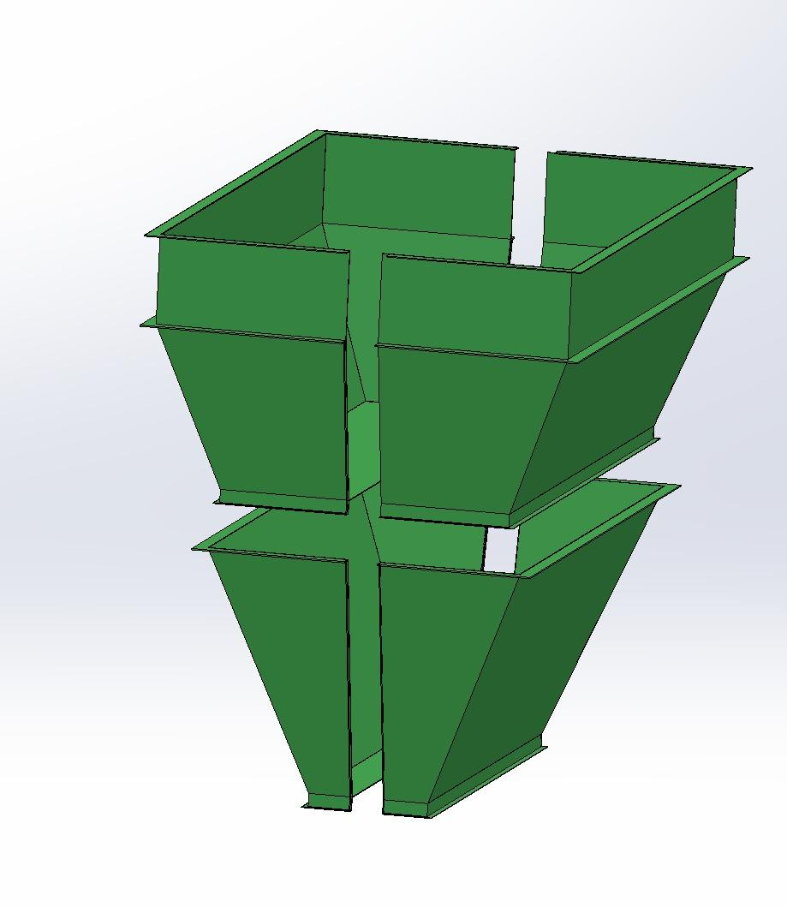
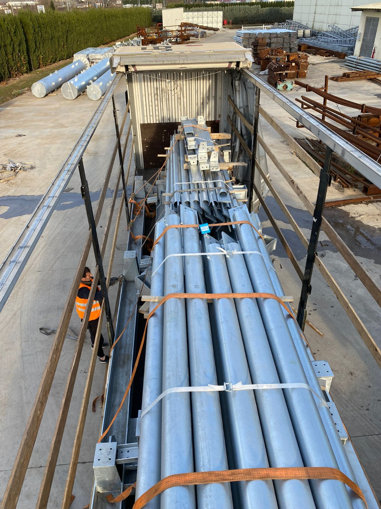

Project Management
We coordinate scope, schedule, actions, risks, milestones and communication across the complete project lifecycle.

INDUSTRIAL PROJECT MANAGEMENT · TÜRKİYE → WORLD
We coordinate industrial projects across Türkiye — connecting technical review, manufacturing, quality, reporting and international logistics into one controlled process.
THE ROLE
We are the link between the customer's requirement and the manufacturing floor. We identify the right production route, manage execution, surface risks early and coordinate delivery to the required destination.
01 / OUR SERVICES
We combine project management with engineering review, manufacturing coordination, production control, quality and delivery — giving customers one coordinated interface throughout the project.
We coordinate scope, schedule, actions, risks, milestones and communication across the complete project lifecycle.
We review drawings and specifications before production and identify manufacturing issues early.
We assess capacity, equipment, technical fit, quality infrastructure and location for each project.
We follow progress, schedule, actions, risks and capacity throughout production.
We coordinate inspection, painting, marking, packing, documentation and international delivery.
OUR EXPERIENCE
Production has been coordinated with more than 10 Turkish manufacturers and material has been dispatched from different locations across Türkiye.
02 / RISK MANAGEMENT
The value is not only in tracking a project. It is in acting early when the plan starts moving away from reality.
We raise it, explain the impact and work with the relevant parties on a practical solution.
Production is reassessed and, where appropriate, work can be redistributed across qualified manufacturers.
Scope and capacity are reviewed before the constraint becomes a project delay.
Actions are escalated through reporting so decisions can be made before the deadline is affected.
03 / PROJECT CONTROL
Daily information, weekly and monthly reports make progress, risks, actions and milestones visible to management.
REPORTING
Structured reporting for progress, risks, production status, actions and delivery information.
04 / QUALITY CONTROL
Quality is not a final inspection. It is a controlled sequence from technical requirements through production, finishing, packing and shipment.
05 / MANUFACTURING NETWORK
For every project, we research the Turkish manufacturing market and identify suitable partners based on monthly capacity, equipment, technical capability, quality infrastructure, location and delivery requirements.
06 / CONFIDENTIALITY
Projects can be structured under an NDA before execution to protect technical information, commercial data and the interests of both clients and manufacturing partners.
07 / GLOBAL LOGISTICS
Packaging, marking, packing lists, shipment coordination and destination-specific delivery arrangements are managed as part of the project.
08 / PACKAGING & DOCUMENTATION
For industrial components, the job is not finished when fabrication ends. Packing is planned around the component geometry, coating condition, lifting points, transport route and the customer's receiving requirements.




09 / INDUSTRIES
Process equipment, mechanical components, steelwork and project-based manufacturing support.
Heavy-duty components, fabrication, replacement parts and equipment for demanding operations.
Steel structures, fabricated components and custom industrial equipment.
Industrial equipment, structures and project supply for energy-related applications.
Conveyors, reclaimers, stackers, structures and mechanical handling equipment.
Custom components, assemblies and equipment for project-based industrial applications.
10 / OUR PROMISE
One coordinated team across engineering, manufacturing, quality, project control and international delivery.
START A PROJECT
Send us your drawings, scope or project requirement. We will review the opportunity and discuss the right manufacturing and project-control route.